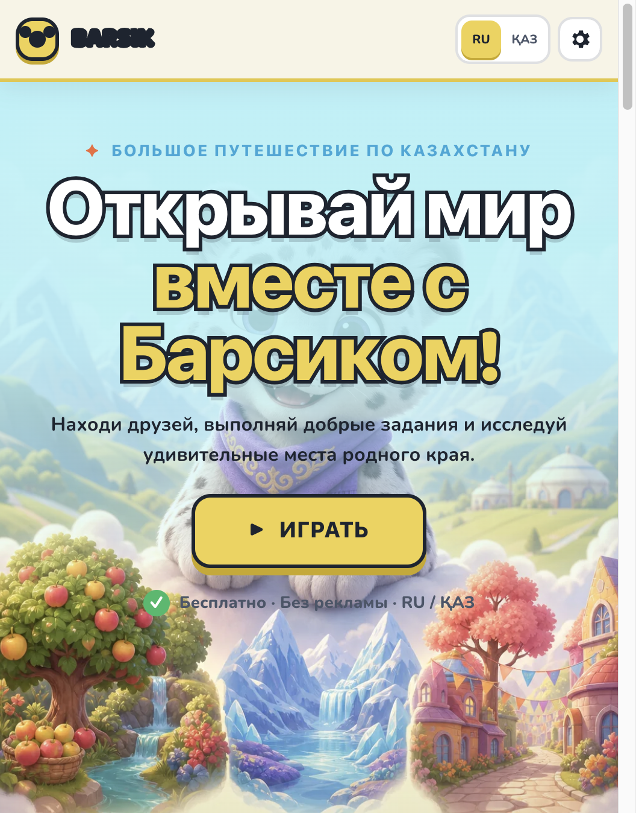

01_welcome_xi_2026-09-09.png
Требование ТЗ
Браузерная игра, лендинг, CTA «Играть», RU/KK переключатель, без рекламы.
По факту
Prod xi отдаёт Hallmark Welcome: логотип BARSIK, RU/ҚАЗ, ИГРАТЬ, слоган про Казахстан.
Почему считаем доказанным
Прямое соответствие согласованному soft-launch UI. Это не «заглушка».
Честный пробел
Субъективное «студийное качество арт-направления» — спор о планке, не о наличии экрана.